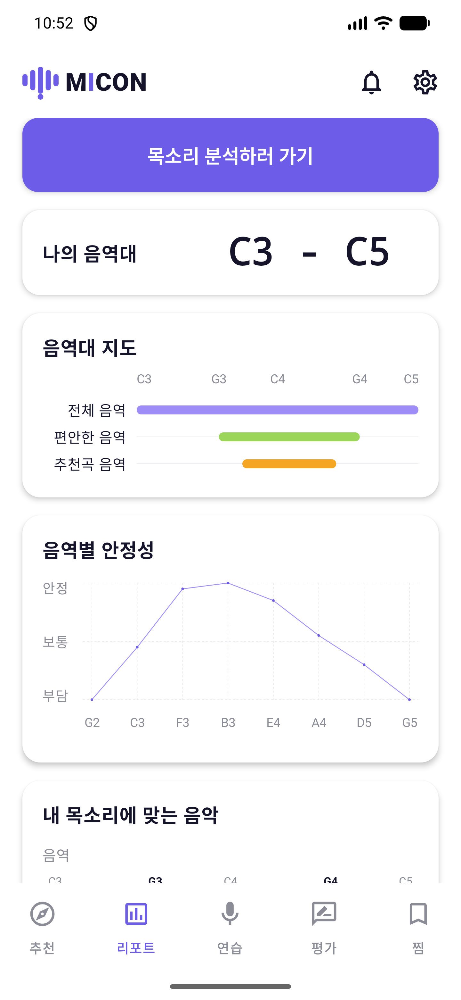
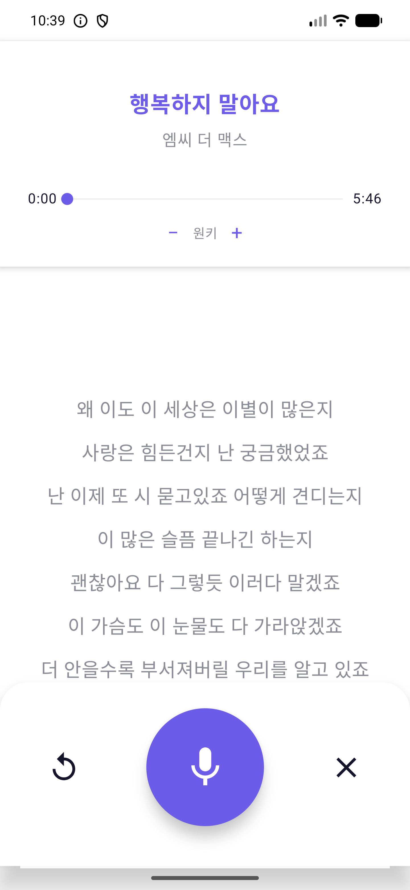

LISTEN TO YOUR VOICE
목소리를 들려주면,
나를 알아가는 시간.
안내를 따라 편안한 음에서 천천히 소리를 내보세요. 목소리의 움직임을 읽어, 낼 수 있는 음과 편안하게 부르는 음을 알아봐요.
- 목소리에 반응하는 음역 측정
- 전체 음역과 편안한 음역을 구분한 리포트
- 나와 닮은 가수를 찾는 음색 분석
TEAM B110 · AUDIO INTELLIGENCE
음역과 음색을 분석해 부르기 좋은 곡과 키를 찾고,
실시간 음정 피드백으로 연습까지 연결한 Android 서비스입니다.
Kotlin · Jetpack Compose · Spring Boot · FastAPI · PyTorch
당신의 다음 애창곡,
목소리 안에 있어요.



실제 Android 앱의 개발 단계 캡처입니다. 화면 속 분석 수치와 곡은 예시이며, 현재 버전과 다를 수 있습니다.
THE PROBLEM
MICON은 선곡의 기준을 취향에서 음역과 음색으로 확장했습니다.
측정한 목소리를 곡 데이터와 비교하고, 추천 키와 연습 피드백까지 하나의 흐름으로 연결합니다.
“이 노래, 키가 너무 높은데…”
“한 키만 더 내려볼까?”
“결국 또 부르던 노래네.”
ONE VOICE, THREE POSSIBILITIES
본선 발표에 사용한 실제 앱 시연으로 핵심 경험을 살펴보세요.
LISTEN TO YOUR VOICE
안내를 따라 편안한 음에서 천천히 소리를 내보세요. 목소리의 움직임을 읽어, 낼 수 있는 음과 편안하게 부르는 음을 알아봐요.
FIND YOUR KEY
좋아하는 곡을 포기하기 전에 키를 바꿔보세요. 곡의 음역과 내 음역을 비교하며, 편안하게 부를 수 있는 시작점을 찾아요.
SEE YOUR VOICE IN MOTION
내 목소리가 목표 음정을 따라가는 모습을 실시간으로 확인하세요. 조금 벗어난 음도, 잘 맞은 순간도 보면서 나만의 한 곡을 완성해요.
목소리의 움직임이
나만의 지도가 되는 중.
발표 자료에 담긴 실제 앱 시연입니다. 화면 속 곡과 분석 결과는 시연 예시입니다.
A CLOSER LOOK
앱의 실제 개발 화면을 한 장씩 살펴보세요.
전체 음역, 편안한 음역과 음역별 안정성을 리포트로 확인하는 화면입니다.
Android 앱 개발 캡처SYSTEM ARCHITECTURE
Android는 녹음·재생과 즉각적인 피드백을 담당합니다. Spring Boot는 데이터와 분석 작업의 흐름을 관리하고, FastAPI는 음성 모델 추론과 추천 계산을 수행합니다.
Kotlin · Jetpack Compose
Java · Spring Security · JPA
PyTorch · ECAPA · Singer-BYOL
계정 · 음성 프로필 · 곡 메타데이터 · 추천 · 연습 이력
녹음 · 원키 반주 · 키별 반주 / 만료 시간이 있는 접근 URL
Android에서 녹음을 제출하면 BE가 AI 작업을 접수합니다. AI의 컴포넌트별 결과를 콜백으로 받아 프로필과 추천 결과에 연결합니다.
Kotlin / Compose / Coroutines / Retrofit / Media3
Spring Boot / JPA / FastAPI / PyTorch / SpeechBrain
MySQL / Flyway / S3 / Docker / Nginx / Jenkins
구현 근거: Android README · ai/recommend-server/README.md · backend/build.gradle · 운영 배포 문서
ENGINEERING DEEP DIVE
라이브러리 이름보다, 그 기술을 어떤 문제에 사용했는지 설명합니다.
같은 사람도 저음과 고음에서 목소리의 특징이 달라집니다. 전체 녹음을 하나의 벡터로만 비교하면 이 변화가 사라질 수 있어, 녹음을 겹치는 구간으로 나눠 비교했습니다.
timbre_recommender/embedding.py
timbre_recommender/scoring.py
timbre_recommender/contracts.py
4초 창, 2초 hop, ECAPA 192차원·Singer-BYOL 1,000차원 모델 계약을 확인했습니다. 모델 결합 비중은 발표 자료와 코드 문서의 버전 차이가 있어 이 페이지에서 고정 수치로 소개하지 않습니다.
한 번 낼 수 있는 최고음이 곡을 끝까지 편하게 부를 수 있다는 뜻은 아닙니다. 곡의 음높이 분포와 사용자의 안정 음역을 비교해, 원키에서 적게 이동하면서도 충분한 음역 커버리지를 확보하는 키를 탐색합니다.
원키에서는 안정 음역을 벗어나는 구간이 있습니다.
본선 발표 37–40번 슬라이드의 설명 예시. 비율은 해당 예시값이며 서비스 전체의 정확도나 성능 지표가 아닙니다. 그래프는 관계를 설명하기 위한 개념도입니다.timbre_recommender/pitch_range.py
docs/KEY_VARIANT_ROLLOUT.md
알고리즘 버전 vocal-range-keyshift-first-98-v3. 가이드 측정과 관찰 음역 프로필의 추천 규칙을 구분하며, 키별 반주 계약은 앱·BE·AI가 함께 사용합니다.
마이크 프레임에서 기본 주파수를 추정하는 YIN과 라이브 판정 로직을 Android 안에서 실행합니다. 반주 재생 위치와 목표 음표를 알고 있으므로, 현재 시점에 해당하는 음표와 사용자의 실제 음정을 비교할 수 있습니다.
hop은 분석 입력 간격입니다. 화면 지연 시간이나 종단 간 처리 성능의 측정값을 뜻하지 않습니다.
scoring/YinPitch.kt
scoring/LiveScorer.kt
scoring/YinPitchTest.kt · LiveScorerTest.kt
YIN의 WINDOW=1024, HOP=320, 대표 음높이·강한 2배음·옥타브 오차·무음 테스트와 라이브 판정 상태를 확인했습니다.
WHEN THE HAPPY PATH ENDS
모델 추론만큼 중요했던 것은 비동기 작업과 사용자 상태를 일관되게 연결하는 일이었습니다.
추천에 profileId·sourceSessionId·profileVersion을 함께 기록하고 앱에서도 대조합니다. 늦게 도착한 예전 응답이 최신 상태를 덮지 않도록 요청 세대와 프로필 정체성을 확인합니다.
docs/profile-recommendation-refresh.md
프로필 교체 중 생성 작업, 늦은 응답, 탭 재진입과 폴링의 회귀 테스트가 포함됩니다.
프로필 저장이 커밋된 뒤 추천 작업을 시작하고, 외부 AI HTTP 호출은 DB 트랜잭션 밖에서 수행합니다. AI 접수에 실패해도 저장된 프로필은 유지하고 작업 실패 상태를 별도로 기록합니다.
RecommendationAfterCommitIntegrationTest.java
정상 커밋, 롤백 시 미전송, AI 접수 실패, 프로필 재측정 사례를 확인했습니다.
EVIDENCE & VALIDATION
운영 전환 문서와 테스트 코드에서 확인할 수 있는 범위를 구분했습니다.
2026.09.21 프로젝트 문서 기준
근거: docs/KEY_VARIANT_ROLLOUT.md · 현재 이용자 수나 추천 정확도 지표가 아닌, 해당 시점의 운영 전환 기록입니다.
대표 음높이 추정, 강한 2배음의 기본음 보정, 옥타브 오차를 보존하는 라이브 판정.
YinPitchTest · LiveScorerTest정확히 일치하는 음색의 순위, 후보 순위와 독립적인 절대 유사도, 4초 창과 2초 hop 분할.
test_timbre_recommender.py커밋 후 작업 전송, 롤백 시 미전송, AI 접수 실패의 상태 저장, 재측정 후 이전 추천 제외.
RecommendationAfterCommitIntegrationTest진행 중 체크포인트의 완료 처리 방지, 잘린 WAV와 측정 메타데이터 불일치 검사.
RangeInputQualityTest이 페이지는 저장소에 구현된 테스트 범위와 문서상 확인 결과를 소개합니다. 앱 전체 테스트 재실행, 실기기 종단 간 지연 측정, 사용자 추천 만족도 평가는 별도 검증 영역입니다.
THE PEOPLE BEHIND MICON
본선 발표 자료에 기재된 팀 역할입니다.
AI·앱·서버·디자인·인프라를 함께 구성했습니다.
GOOD TO KNOW
내 목소리에 맞는 곡과 키를 찾는 것부터 시작할 수 있어요. MICON은 현재의 음역을 이해하고, 목표 음정과 내 음정을 비교하며 연습할 수 있도록 돕는 서비스입니다.
취향은 듣고 싶은 노래의 기준이고, MICON의 맞춤 추천은 내 음역과 음색도 함께 고려합니다. 좋아하던 곡의 적합도를 확인하거나, 내 목소리와 어울리는 다른 곡을 발견할 수 있어요.
이 페이지는 MICON을 소개하는 랜딩페이지입니다. 음성 측정·분석과 실시간 노래 연습은 Android 앱에서 제공하는 기능입니다. 이 웹페이지에서는 마이크를 사용하거나 음성을 수집하지 않습니다.
네. 서비스 소개의 움직이는 화면은 본선 발표 자료에 담긴 실제 앱 시연입니다. 앱 둘러보기와 첫 화면에는 Android 저장소의 개발 단계 캡처를 사용했습니다. 화면 속 곡과 분석값은 시연 예시이며, 개발 캡처는 현재 앱의 구성과 다를 수 있습니다.